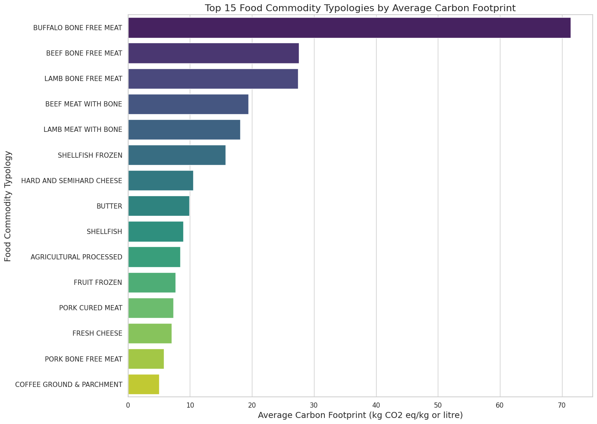

Synopsis
Cooking is an art-a uniquely human endeavor. No other animal has a penchant for transforming raw ingredients into delicious dishes as we do. Over the centuries, cultures across the world have evolved idiosyncratic culinary practices encoded into cuisine-specific recipes. Experts have struggled to make sense of the rules that shape these recipes. While there is some agreement on thumb rules that go into cooking, it is widely accepted that cooking has a huge component of human intuition and skill that cannot be broken down into a set of rules. Arguably, a rule-based understanding of cooking can transform different aspects of food, including flavor, nutrition, and health.
Consider chess. Despite being a game that is based on simple rules, the sheer number of configurations and possibilities of moves are mindboggling. As a consequence, the role of human intelligence and intuition has been considered of paramount importance. Despite that, the rise of supercomputing led to Deep Blue winning against the then-world champion Garry Kasparov in 1997. Similarly, various aspects of life have been deeply impacted by a data- and computation-intensive approach: From weather prediction to Google Maps navigation, from tagging on Facebook to logging in to a MacBook.
As we stand in the middle of a data revolution in the 21st century, why
should food be left behind? Food and cooking are the core of our cultural identity other than being the basis of nutrition and health. The increasing availability of culinary data and the advent of computational methods for their scrutiny are dramatically changing the artistic outlook toward gastronomy. The application of data-driven strategies for investigating gastronomic data has opened up exciting avenues giving rise to an all-new field of 'Computational Gastronomy.' This emerging interdisciplinary science asks questions of culinary origin to seek their answers via the compilation of culinary data and their analysis using statistics, computer science, and artificial intelligence methods.
Can we make food computable? Food and cooking are multifaceted endeavors involving a host of factors-geo-cultural attributes, flavor profiles, cooking methods, nutritional profiles, and health associations, among others. Meticulous compilation of structured data on all of these facets is critical for making food computable.
What decides the uniqueness of a cuisine? French cuisine is different from Indian cuisine. And so is Mexican cuisine distinct from Thai cuisine. What determines the identity of a cuisine? While expert chefs will have qualitative answers to this question, looking through the lens of data, quantitative analysis points to 'culinary fingerprints' that highlight the essence of regional cuisines.
How are world cuisines related to each other? Regional cuisines have built a rich repository of recipes by combining ingredients and ways for their processing in a characteristic manner. Over time, there has been much exchange of culinary practices across cuisines with cross-cultural adaptations of recipes. The data-driven exploration of similarities and differences in cuisines has yielded a rich understanding of the global culinary landscape via the 'World Cuisine Tree.'
Can computers cook? Given the diversity of ingredients and cooking techniques, the number of theoretically possible recipes is astronomically large. Quite clearly, the natural evolution of cuisines has led to cultural lock-ins, leaving out many recipes. One of the most exciting questions to ask is 'Can computers generate novel recipes with the help of structured data repositories?'. In an era in which artificial intelligence is trying to imitate the artistic and literary talent of Beethoven, Mozart, and Shakespeare, the question is, can we capture the intelligence and intuition of a chef in a computer program?
Can we create tasty and healthy recipes? The answer to this question is the holy grail of the modern food processing industry with severe repercussions for public health. The ability to span the vast 'recipe space' in a computer enables us to arrive at potentially palatable food and beverages. With the help of 'culinary fingerprints,' which capture the culturally locked-in patterns in cuisines, and empirically available
data on the health impacts of ingredients, one can attempt to create tasty and healthy recipes.
How can we mine alternative sweeteners with the help of a computer? Increasingly, the food and beverages industry is under pressure to cut down on sugar and salt linked with lifestyle disorders. One possible way to achieve this goal is to find natural or nature-like alternatives. The chemical structure of a flavor molecule specifies the taste. However, finding simple rules for predicting taste based on structural features has been an unsolved problem. A data-driven approach to this problem leads to computational models that run through a battery of chemical features relating to taste. Mining alternative compounds with a desirable taste profile is bound to revolutionize the food and beverages industry.
Can data help make food sustainable? As we stare at the prospect of feeding 10 billion people in the not-so-distant future, the need to make food sustainable becomes highly relevant. Data-driven approaches can help us arrive at guilt-free and environmentally sustainable food.
Contents
- Preface: When life gives you lemons13
- 1. Cooking as an Art14
- 2. Food as Data Science18
- 3. Recipe Data25
- 4. Flavor Data30
- 5. Nutrition and Health Data7
- 6. Culinary Fingerprints18
- 7. The World Cuisine Tree25
- 8. Can Computers Cook?30
- 9. Tasty and Healthy Recipes7
- 10. The Taste of a Molecule18
- 11. The Future of Food25
When life gives you lemons
On the night of 25th February 2015, when I was traveling from Ahmedabad to Jodhpur by Suryanagari Express, my battery-drained cellphone was silently teeming with messages. I woke up early in the morning to realize that our recently submitted preprint after 'respectful rejections' from some prestigious journals had caught the attention of MIT Technology Review editors, who had chosen to highlight our research in their Emerging Technology section. In this first-ever data-driven investigation of Indian cuisine, our research highlighted the key role of spices in shaping the food pairing pattern of Indian recipes. What followed was an exciting coverage of our work by the Washington Post, The Hindu, and a mention in the National Public Radio's (USA) blurb. The MIT's mention had opened the floodgates of media attention to our research.
Despite making meaningful contributions to science, not every scientist gets the recognition that they deserve. Therefore, I was exhilarated by the way the research from my newly constituted lab in IIT Jodhpur was being received by academia and the media. In the first week of March 2015, the news about our research was trending on Facebook and Twitter, putting IIT Jodhpur in a positive light, adding to the pride of its student fraternity. Besides being celebrated by friends and peers, I
also received messages from the alumni who were rejoicing in the alma mater pride.
However, I had not realized that the future had something else in store for me. Normally, an IIT faculty gets regularised after a mandatory probation period of a year. Along with many other faculty members who were reviewed for completion of probation, my probation period had also been extended beyond the one-year norm without citing any reason. Some of my colleagues had been terminated in the probation period and a highly respected senior professor in visiting position was also unceremoniously removed. Many faculty members had left the Institute around the same time, perhaps by sensing the precariousness of the situation. Clearly, an atmosphere of uncertainty prevailed.
In the last week of March 2015, the Institute arranged for a review of my extended probation in the Indian Institute of Science, Bangalore, with a committee that consisted of a biochemist, a neuroscientist, a biotechnologist, and a civil engineer. In spite of a strong presentation and best of the efforts conveying the excitement of my recent research explorations, in the end, I left the room with the impression that the committee members had made up their minds that my work is irrelevant and insignificant and were fixated on their opinion.
I had a good publication record in respectable journals if it was the
impact of the work that mattered. I had taught with resoundingly positive student feedback if they wanted teaching abilities. I had set up a full-fledged computational lab with the seed grant earned through a rigorous review and was guiding four Ph.D. research scholars. Notwithstanding these facts, I was meant to learn a lesson-that a committee bestowed with unlimited powers is omniscient. In the middle of the academic semester, I received a letter discontinuing me from the services for unsatisfactory performance.
Broken and shattered, I was hospitalized in depressed condition. Coming from a lower middle-class family and with no godfathers in academia, I was feeling utterly helpless. What followed was a dramatic course of events. Notwithstanding the unequivocal support and a plea for reinstating me, my termination was not revoked by the authorities. With no alternative position in hand and with a responsibility to cater to the family, I was left with no choice but to leave Jodhpur.
I clearly remembered the day in April 2013 when I had moved to IIT Jodhpur from the CSIR-Institute of Himalayan Bioresource Technology, where I had joined my first job as a Scientist after returning from the postdoctoral stint at Max-Planck-Institute for Molecular Genetics. Though I was leaving a permanent job in CSIR and the serenity of Himalayas, it was a dream come true to be joining an IIT. Exceptionally, among the older as well as the newly created
IITs, IIT Jodhpur had begun its journey to become perhaps the only IIT with interdisciplinary Centers devoid of conventional department. With my training and interests spanning across physics, biology, and computation, these were the most fitting circumstances for me to contribute. Yet, here I was, leaving an IIT after around two years of tumultuous journey with a few exciting highs and some terrible lows.
The book Antifragile (Nassim Nicholas Taleb) has taught me a life-changing lesson-when life gives you lemons, make lemonade. What happened to me in IIT Jodhpur could have either broken me or made me stronger. I could have spent my time fighting legal battle or would have invested all the energy to focus on my research. I chose the latter. In the last eight years, I have continued to establish the foundations of 'Computational Gastronomy', a niche that blends food and data science with the power of computation. Other than providing insights into food and cooking, primarily considered to be artistic endeavours, application of computational techniques is bound to shape the future of food ushering an era of data-driven innovations. In my lab at IIIT-Delhi, we have built algorithms and databases to explore various aspects of food and its association with flavor, taste, nutrition, health, sustainability, and novel recipe generation. The research that was seeded in a classroom of IIT Jodhpur has matured into a domain of data science and has gained traction in academia as well as the industry. What started as an interesting data-driven excursion into food,
and was side-lined as irrelevant, has become a field in its own right.
As a teenager I aspired to be an astronomer. In his seminal book 'The Physiology of Taste,' Jean Anthelme Brillat-Savarin had famously quipped, 'The discovery of a dish confers more happiness on humanity than the discovery of a new star.' While I could not become an astronomer and discover new stars, I am on the path of discovering new dishes to make humanity happier and, hopefully, healthier.
RecipeDB Statistics
Cooking Processes
The infographic depicts the processes that are used the most globally across different cuisines.
Cuisine Size
The infographic breaks down the global recipe count, cuisine by cuisine, offering a culinary world tour in numbers.
Cooking Styles

The infographic shows the culinary secrets behind the world's top 5 cuisines, featuring their top 15 cooking processes.
Popular Utensils

This infographic explores the diverse world of culinary tools by highlighting the top 10 utensils used across various cuisines.The infographic aims to showcase the universal and unique aspects of kitchen tools that contribute to the preparation of delicious meals worldwide.
Popular Ingredients
The infograph shows the five most popular cuisines that primarily use ingredients from saltwater sources.
Cuisine Characteristics
This infographic showcases the diverse ingredients used in various global cuisines, highlighting the rich and unique flavors and culinary traditions from around the world. Explore the multicultural tapestry of food through this visual guide.
Total Cooking Time

This is the histogram for Total Cooking Time.
Cooking Time + Preparation Time

This is the histogram for Cooking Time + Preparation Time.
Top Processes

This is the bar graph for Top Processes.
FlavorDB Statistics
Aromatic and Non-Aromatic Molecules
The percentage of aromatic and non-aromatic molecules in FlavorDB.
Functional Group Distribution

The distribution of functional groups for molecules with odourless flavor profile in FlavorDB
Aromatic Rings

The distribution of number of aromatic rings in flavor molecules.
Ingredient Categories

The frequency distribution of ingredient categories.
Frequent Flavors

The frequencies of flavor terms found in FlavorDB.
Radius of Gyration

The statistics of radius of gyration against number of aromatic rings.
Ingredient Categories Statistics

The distribution of ingredient categories in FlavorDB.
Functional Groups Statistics

The radar chart showing the statistics of top 10 functional groups in FlavorDB.
Aromatic Rings and Bonds

The plot depicting relationship between number of aromatic rings and aromatic bonds for compounds in FlavorDB.
FlavorDB Tree Map

The tree map for exploring FlavorDB data.
Natural Source Word Cloud

The word cloud for the Natural Source in FlavorDB.
Top Categories

The Tree Map for Top Categories in FlavorDB.
Top 20 Entities

This is the bar graph for Top 20 Entities.
Flavor-Profile

This is the bar graph for Top 15 Flavor Profile.
Top 20 Natural Sources

This is the bar graph for Top 20 Natural Sources.
Energy Distribution

This is the Violin Plot for Energy Distribution.
IOFI Distribution

This is the bar graph for IOFI distribution.
Natural Occurance

This is the bar graph for Natural Occurance.
CarbonFootprint Statistics
Carbon Footprint by System Boundary (Top10+Other)
The ScatterPlot of Carbon Footprint by System Boundary (Top10+Other).
Carbon Footprint of Top 500 Food Commodity Items

The SwarmPlot of Carbon Footprint of Top 500 Food Commodity Items.
Distribution of Carbon Footprint

The Histogram of Distribution of Carbon Footprint.
Number of Carbon Footprint Data Points by Publication Year and Region
The Heatmap of Number of Carbon Footprint Data Points by Publication Year and Region.
Number of Carbon Footprints Reported per Publication Year
The Histogram of the Number of Carbon Footprints Reported per Year.
Top 15 Food Commodity Typologies by Average Carbon Footprint
The BarPlot of Top 15 Food Commodity Typologies by Average Carbon Footprint.
Total Number of Items Reported by Type of Source

The Bar Plot of Total Number of Items Reported by Type of Source.
Graphs
Recipe Timeline Flowchart

The flowchart for Recipe Timeline.